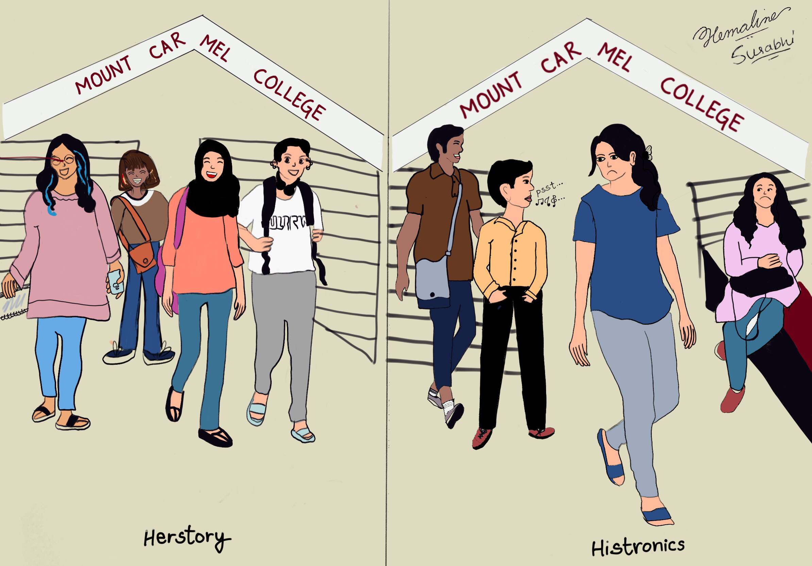
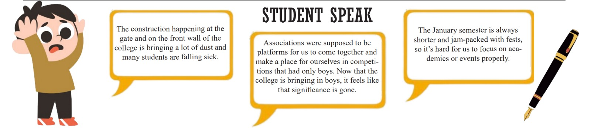

EDITORIAL
The Coed Conundrum: Opening Doors or Pandora’s Box?

Institutions, especially long-standing educational institutions such as Mount Carmel College, are often synonymous with words such as prestigious, esteemed and reputed centres for learning. But when laid bare as a girl’s college to men with prejudiced minds, these synonyms begin to be replaced by several derogatory and stereotyped ones.
Mount Carmel College’s decision on December 4 to admit male students, marking its end of 75 years as an all-female institution, follows closely on the heels of its platinum jubilee celebration, centered around the theme of empowering women and creating a unique “Herstory.”
Strong voices of dissent against this decision have risen through the college walls, not because students stand directly in opposition to the decision made by the college. Rather, it is an attempt to oppose the overt sexualisation that men take the liberty of on social media platforms, encouraged by others of similar bigoted mindsets. Before students could digest this transformative change, prominent Instagram personalities seized the opportunity to criticize the decision, opening the floodgates for hundreds of students from other institutions to weigh in. What started as innocuous teenage banter soon descended into outright abuse, with comments like “Ab ladkiyon ko chedna hua aur bhi aasan” and “Don’t worry about missing fests now; many girls are gonna miss their periods.”
This decision and the online comments that followed have exposed several rungs of prejudice, ranging from stereotypes about the girls of the college all the way to overt sexualisation and threats of abuse in an otherwise “protected” space for the students of this college
The permissiveness afforded to men and the objectification of over 8,000 women based on their choice of an educational institution epitomize the darker facets of today’s social media landscape. While Instagram exposes such abusive comments to a wide audience, it curiously shields these offenders by discreetly blocking reels that would reveal their indecencies
The misogynistic commentary that swiftly flooded social media platforms not only exposes the deeply ingrained stereotypes surrounding women’s colleges but also highlights the alarming ease with which men exploit these spaces
If the announcement of change for the college has laid bare this level of bigotry and the extremity of sexualising an entire institution simply for the sake of entertainment, then Carmelites worry over the prospect of these very individuals becoming part of the college community. Beyond the social media storm, other anxieties surface, particularly among those with strict parents who may resist allowing their daughters to study in a coed environment. This may lead to a migration to other colleges that may lack the same infrastructure, opportunities, and upward mobility as Mount Carmel. There’s also trepidation about potential changes such as stricter dress codes or, worse, a uniform at the university level. Questions abound regarding space, representation in associations, and concerns over the maintenance of infrastructure and facilities.
The challenge for Mount Carmel now is not just in coexisting but also fostering an environment where diversity is celebrated rather than exploited and where education remains the central focus, free from the taint of gender-based biases.
Whether this decision has opened doors or unleashed Pandora’s Box is a question that will be keenly discussed by onlookers and the college community for years to come, echoing the broader societal struggle against prejudice and underscoring the imperative to safeguard the sanctity of educational spaces.
Are 'Animal' Instincts Driving Humans to Opt for Inhuman Movies?

The Indian audience appears to be a perplexing lot. This explains the challenges faced by Bollywood directors and writers in crafting compelling movies. While they strongly oppose films that appear to insult religious sentiments, they seem to readily acclaim those that romanticize atrocious behavior. Showing a noticeable paradox in their responses.
The recent controversy surrounding 'Annapoorani: the Goddess of Food' exemplifies how religious sentiments can trigger strong reactions. The depiction of the goddess consuming meat, a departure from traditional practices, sparked a backlash from groups like the Vishwa Hindu Parishad (VHP), resulting in the removal of the film from OTT platforms and public apologies from 'Zee Entertainment.' The swift and assertive response in this case highlights the reverence attached to religious beliefs as well as the impact of conservative forces on public debate.
On the other hand, the apparent acceptance of movies like 'Animal,' despite concerns raised, sheds light on the selective nature of societal critique. Despite potential justifications for the director's intent to illustrate the impact of a harsh upbringing, the film falls short in portraying the consequences on the protagonist and presents the lead with a seemingly happy ending. The film's portrayal of inhumane behavior and its seemingly lax treatment of the lead character's wrongdoings, including infidelity, raises questions about societal priorities in terms of what elicits collective outrage.
What is disheartening is the asymmetry in societal reactions.Even though religious practices crafted by humans are not always accurately depicted in movies, there is a group of individuals actively advocating for their accurate representation. However, when it comes to films that demean women and normalize verbal and physical abuse, a segment of the same audience is quick to dismiss concerns, asserting that women are easily offended by "just a movie." The argument often goes that such content is for entertainment purposes, though it remains unclear who finds entertainment in witnessing the mistreatment of women.
In Hinduism, various sects, including Shaktism, describe the main ultimate God as feminine energy, linking it to the concept of a mother being the most crucial and ultimate deity, responsible for all creation. Given this reverence for the feminine, it raises the question of why doesn't society channel the same aggression and passion towards eliminating movies that diminish women, portraying them as mere objects?
-AVNI SHETTY
From Pro-Israel to Ceasefire Support: India's Changing Dynamics in the Israel-Palestine Conflict
October 7, 2023. That was the point in time when people around the world became aware that they were witnessing a genocide taking place right under their noses. The Israel conquest over Palestine's land, which they claim as theirs, started long before just last year, and has wreaked havoc for one side unbiasedly for more than 70 years.
You would think that in this day and age due to international laws and stature, a war would not take place easily, or even if it did, it would be shut down by other countries immediately. Unfortunately, time has once again taught us that most countries worldwide would rather think about their political agendas and so-called diplomatic relationships before picking a side, be it ethical or not.
You know something is amiss when the public masses can see the right from the wrong but the government they voted to power picks a course unlike. The Indian government, which was (not so) shockingly pro-Israel during the initial hearings, registered the whole scenario as counterterrorism. Sure, India’s views on terrorism and counterterrorism are fairly agreeable but dismissing innocent lives being taken and abstaining on voting for a ceasefire despite knowing the casualties and long-term displacement and trauma that follows, it was clear that the conflict was being looked at from a beneficial perspective. When you dig deeper to attempt to understand the reasoning behind India’s decision, there is a lot to uncover. An article by The Diplomat stated the immediate cause could have been the need to latch onto a superpower to strengthen ties for defense purposes, and supporting Israel would have not stopped the flow of weapons and arms that are imported from there. The article went on to ponder the probability of right-wing ideology, western political powers, and Islamophobia as others to substantiate why the Indian Government could have proceeded in that direction. However, this is not to say that India did not provide aid to Palestine during this Humanitarian crisis, sending over medical supplies and disaster relief materials. The government says that it will continue to provide aid for as long as needed but the irony is self-reflective.
India’s stance on this issue throughout the years has never been consistent, understandably so due to the change in governments and policies every few years. In the recent UNGA resolutions concerning Palestine and Israel, India shifted sides to vote for an immediate ceasefire, while asking for a two-state approach. While this decision aligns with the majority, is it too late with the increasing amount of death tolls and an already ruined state of Palestine? Will governments only come to lament their decision-making after history books carry stories of victims years later to no avail?
-Dhwani Dharamshi
